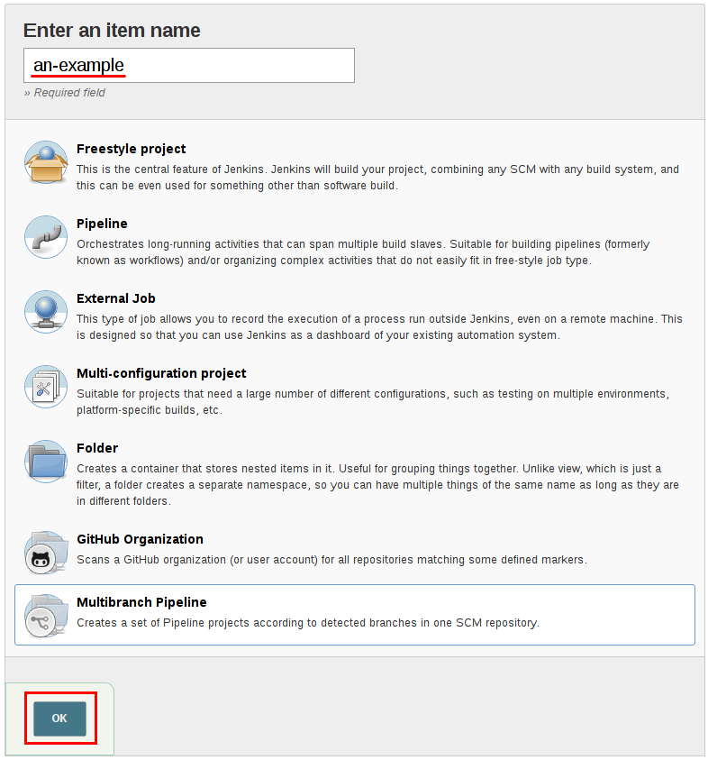
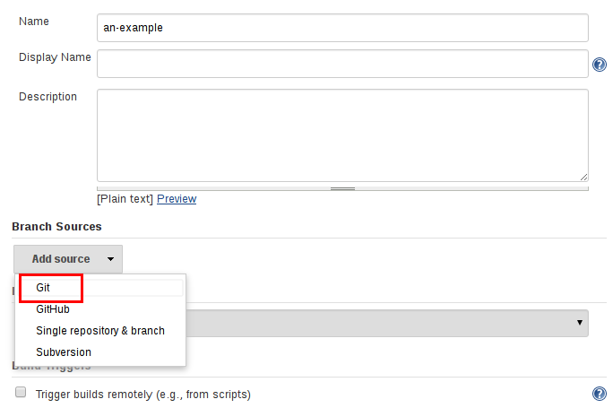
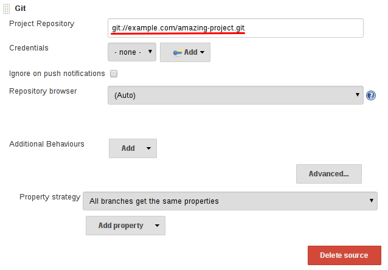

分支和pull请求
在previous section 中，实现了一个能够检入到源代码控制中的 Jenkinsfile。 本节将介绍在`Jenkinsfile`的基础上构建的
Multibranch 流水线的概念，用来在Jenkins中提供更动态和自动的功能。
创建多分支流水线
Multibranch Pipeline 项目类型能够 在同一个项目的不同分支上实现不同的Jenkinsfile。 在多分支流水线项目中, Jenkins 自动的发现, 管理和执行在源代码控制中包含`Jenkinsfile`的分支的流水线。
这消除了手动创建和管理流水线的需要。
创建多分支流水线:
-
点击Jenkins主页上的 New Item 。
-
为你的流水线输入一个名称, 选择 Multibranch Pipeline 并点击 OK。
|
Jenkins 使用流水线的名称在磁盘上创建目录。 包含空格的流水线名称可能会在脚本中出现不希望在路径中出现空格的bug。 |

-
添加 Branch Source (比如, Git) 并输入仓库的位置。


-
Save 该多分支流水线项目。
在 *Save*是, Jenkins 自动的扫描指定的存储库并为包含`Jenkinsfile`的仓库的每个分支创建合适的项目。默认情况下， Jenkins 不会自动的重新索引分支添加或删除的仓库(除非使用 组织文件夹), 所以周期性地重新索引有助于配置多分支流水线：

附加的环境变量
多分支流水线通过`env` 全局变量公开了额外的与分支构建相关的信息 , 比如:
- BRANCH_NAME
-
该流水线正在执行的流水线的名称, 比如
master。 - CHANGE_ID
-
对应于某种形式的更改请求的标识符, 比如在 全局变量引用中列出了附加的环境变量的pull请求。
支持Pull请求
在 "GitHub" 或 "Bitbucket" 分支源, 可以使用多分支流水线来验证 pull/change 请求。 该功能分别由 GitHub 分支源 和 Bitbucket 分支源 插件提供。有关于如何使用这些插件的更多信息，请参考他们的文档。
使用组织文件夹
组织文件夹使Jenkins 能够监视整个 GitHub 组织或 Bitbucket 团队/P项目 并自动地为仓库创建一个新的多分支流水线，该流水线包括分支和含有`Jenkinsfile`文件的pull请求。
目前, 该功能只存在于 GitHub 和 Bitbucket, 该功能由 GitHub 组织文件夹 和 Bitbucket 分支源 插件提供。